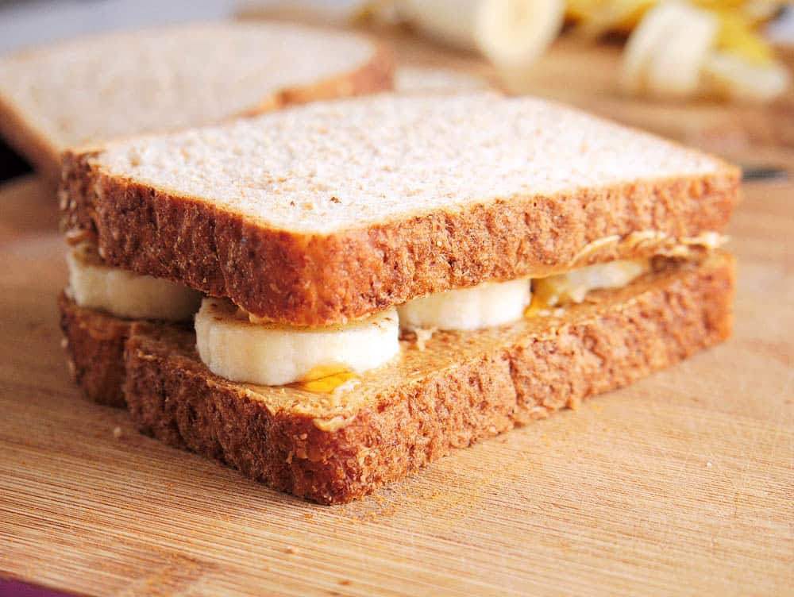

Peanut Butter Banana Sandwich

Description
In this recipe, you will learn how to make a Peanut Butter Banana Sandwich. This sandwich is a classic and associated most with Elvis Presley. While this recipe is lacking some of the ingredients that went on The King's sandwich, it will be a tasty treat nonetheless!
Ingredients
- 2 slices bread
- 4 tablespoons peanut butter
- 1/2 banana
Steps
- Toast bread for 1-2 minutes
- Spread 2 tablespoons of peanut butter on each slice of toasted bread
- Cut 1/2 a banana into slices
- Place the banana slices on one slice of bread
- Flip the other slice of bread onto the one with the banana slices on it
- Cut in half diagonally
- Enjoy!